Analítica de datos
¿Que es el Data Analytics?
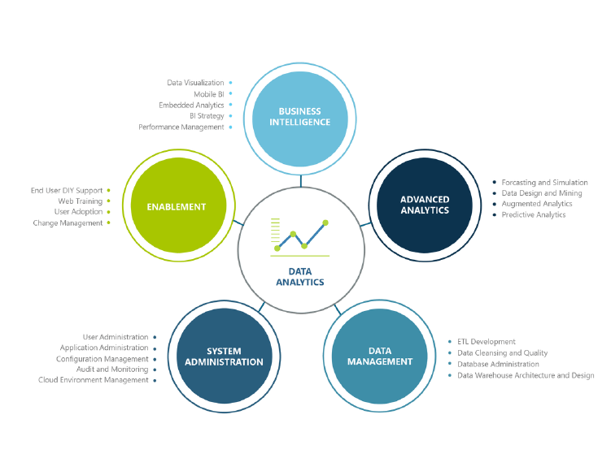
Gestión de los datos para todos los usos (operacional y analítico) y el análisis de datos para conducir los procesos comerciales y mejorar los resultados a través de toma de decisiones más eficaz y basadas en la experiencia del cliente.
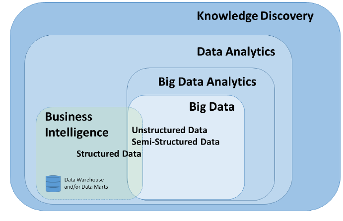
Roles en Data Analytics
- Data Analyst
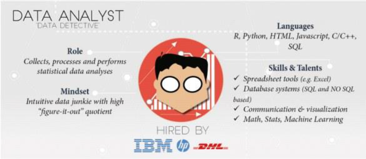
- Data Engineer
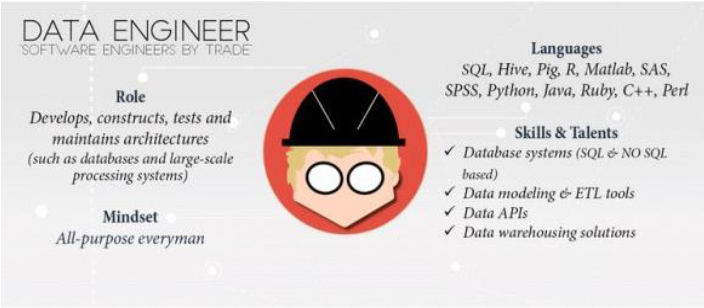
- Data Scientist
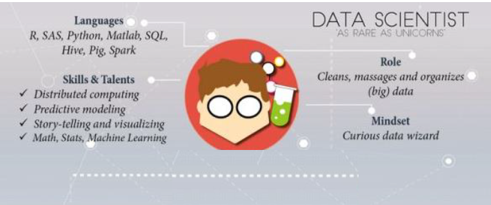
- Data Architect
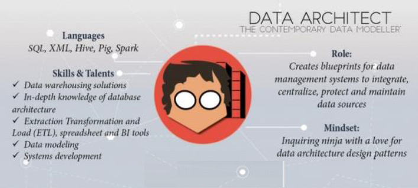
- Business Analyst
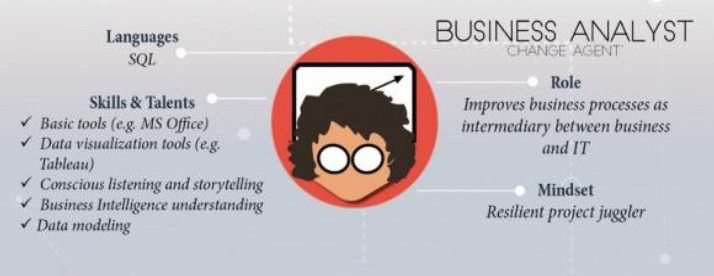
¿Que es el análisis de datos?
El proceso de identificar, limpiar, transformar y modelar los datos para detectar información significativa y útil. Después, los datos se convierten en una historia a través de informes para el análisis con el fin de admitir el proceso crítico de toma de decisiones
Metodologías
-
Análisis Exploratorio de Datos (EDA) que pretende encontrar patrones y relaciones en los datos.
-
Análisis Confirmatorio de Datos (CDA) aplica técnicas estadísticas para determinar si las hipótesis sobre un conjunto de datos son verdaderas o falsas
Tipos
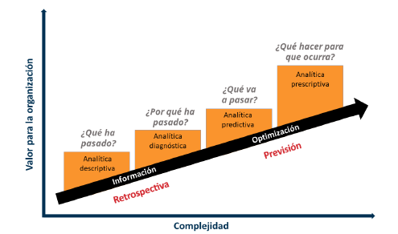
Analítica descriptiva
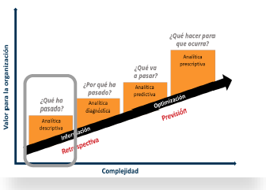
El análisis descriptivo ayuda a responder preguntas sobre lo QUÉ HA SUCEDIDO
-
Mediante el desarrollo de indicadores clave de rendimiento (KPI), se puede facilitar el seguimiento del éxito o el fracaso de los objetivos clave.
-
Un ejemplo de análisis descriptivo es la generación de informes para proporcionar una visión de los datos financieros y de ventas de una organización.
Analítica diagnóstica
-
El análisis de diagnóstico ayuda a responder preguntas sobre POR QUÉ SE HA PRODUCIDO un evento.
-
Las técnicas de análisis de diagnóstico complementan el análisis descriptivo básico y usan los resultados del análisis descriptivo para identificar la causa de estos eventos.
Analítica predictiva
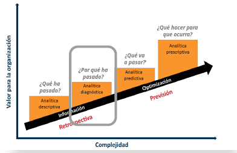
El análisis predictivo ayuda a responder a preguntas sobre lo QUÉ OCURRIRÁ EN EL FUTURO.
-
Las técnicas de análisis predictivo usan datos históricos para identificar tendencias y determinar la probabilidad de que se repitan.
-
Engloban diversas técnicas estadísticas y de aprendizaje automático, como las de redes neuronales, árboles de decisión y regresión.
Analítica presctiptiva
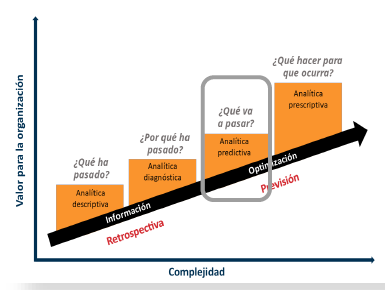
El análisis prescriptivo ayuda a responder preguntas sobre las acciones que se deben llevar a cabo para lograr un objetivo.
-
Esta técnica permite que, en caso de incertidumbre, las empresas tomen decisiones fundamentadas.
-
Las técnicas de análisis prescriptivo dependen de estrategias de aprendizaje automático para buscar patrones en conjuntos de datos de gran tamaño.
-
Mediante el análisis de eventos y decisiones anteriores, las organizaciones pueden calcular la probabilidad de otros resultados.
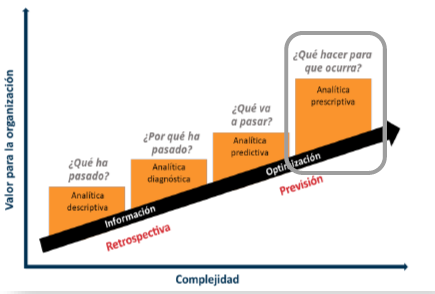
Proceso de análisis de datos
- Preparación
- Modelado
- Visualización
- Análisis
- Administración
1. Preparación
La preparación de los datos ocupa gran parte del trabajo.
-
Los datos imprecisos o incorrectos pueden tener un gran impacto y generar informes no válidos, una pérdida de confianza y un efecto negativo en las decisiones empresariales
-
La preparación de datos es el proceso de generación de perfiles,de limpieza y transformación de los datos para prepararlos para el modelado y la visualización.
-
La preparación de datos consiste en:
○ garantizar la integridad de los datos,
○ corregir datos incorrectos o inexactos,
○ identificar los datos que falten,
○ convertir datos de una estructura o hacer que los datos sean más legibles.
- Las garantías de privacidad y seguridad también son importantes. Estas pueden incluir la anonimización de los datos para evitar que se compartan en exceso o impedir que los usuarios vean información de identificación personal cuando no es necesario.
2. Modelado
El modelado de datos es el proceso de determinar cómo se relacionan las tablas entre sí.
-
Este proceso se realiza mediante la definición y creación de relaciones entre las tablas.
-
A partir de ahí, puede mejorar el modelo si define métricas y agrega cálculos personalizados para enriquecer los datos.
-
Un modelo de datos eficaz hace que los informes sean más precisos, permite que los datos se exploren de manera más rápida y eficaz, reduce la duración del proceso de creación de informes y simplifica el mantenimiento futuro del informe.
-
Un modelo mal diseñado puede tener un impacto negativo en la precisión general y el rendimiento del informe.
3. Visualización
En la tarea de visualización es donde se hace que los datos cobren vida. El objetivo final de la tarea de visualización es solucionar los problemas de la empresa. Un informe bien diseñado debe contar una historia atractiva sobre esos datos, lo que permite a los responsables de la toma de decisiones empresariales obtener rápidamente las conclusiones que necesitan.
-
Con las visualizaciones e interacciones adecuadas, puede proporcionar un informe eficiente que guíe al lector a través del contenido de forma rápida y eficaz, lo que le permitirá seguir una narrativa en los datos.
-
Los informes que se crean durante la tarea de visualización ayudan a las empresas y a los responsables de la toma de decisiones a comprender el significado de los datos para que se puedan tomar decisiones acertadas y precisas.
-
Como analista de datos, se debe dedicar tiempo a comprender por completo el problema que la empresa intenta resolver.
4. Análisis
La tarea de análisis es el paso importante de entender e interpretar la información que se muestra en el informe.
- Con el análisis avanzado, las organizaciones pueden profundizar en los datos para predecir patrones y tendencias, identificar actividades, comportamientos, y permitir a las empresas formular las preguntas adecuadas sobre sus datos.
5. Administración
-
La administración del contenido ayuda a fomentar la colaboración entre equipos y usuarios. El uso compartido y la detección de contenido es importante para que las personas adecuadas obtengan las respuestas que necesitan. También es importante asegurarse de que los elementos sean seguros.
-
La administración adecuada también puede ayudar a reducir los silos de datos dentro de la organización. La duplicación de los datos puede dificultar la administración y la introducción de latencia de datos cuando los recursos se usan en exceso
Herramientas de análisis de datos
Podemos ver según el prestigioso cuadrante de Gatner en 2025 las herramientas de analítica de datos mas utilizadas.
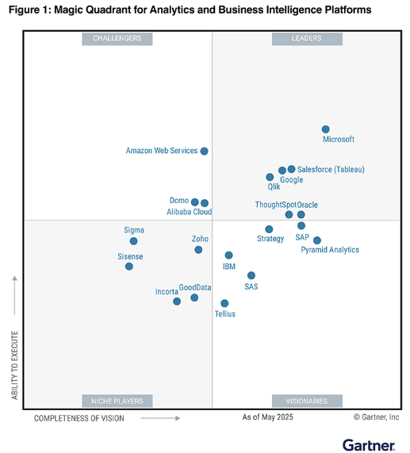
Material original © Jorge Soro, reproducido con autorización. Fuente: Analítica de datos.